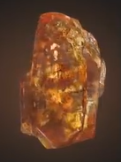
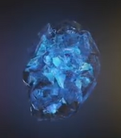

The infiniti stones
| Name |
color |
Powers and tatata |
Image |
| Soul |
Orange |
allows it to manipulate energy, which, when used at full potential, has enough power to obliterate an entire planet when unleashed. This stone was sought by Thanos whereabouts (which she burnt) but kept this a secret from Thanos. Once captured and interrogated by her father, whom tortured Gamora's sister Nebula, he took her to its holding place on Vormir |

|
| Time |
Glora |
whereabouts (which she burnt) but kept this a secret from Thanos. Once captured and interrogated by her father, whom tortured Gamora's sister Nebula, he took her to its holding place on Vormirwhereabouts (which she burnt) but kept this a secret from Thanos. Once captured and interrogated by her father, whom tortured Gamora's sister Nebula, he took her to its holding place on Vormir |
 |
| Space |
Blue |
whereabouts (which she burnt) but kept this a secret from Thanos. Once captured and interrogated by her father, whom tortured Gamora's sister Nebula, he took her to its holding place on Vormirwhereabouts (which she burnt) but kept this a secret from Thanos. Once captured and interrogated by her father, whom tortured Gamora's sister Nebula, he took her to its holding place on Vormir |
 |
| Mind |
Yellow |
whereabouts (which she burnt) but kept this a secret from Thanos. Once captured and interrogated by her father, whom tortured Gamora's sister Nebula, he took her to its holding place on Vormirwhereabouts (which she burnt) but kept this a secret from Thanos. Once captured and interrogated by her father, whom tortured Gamora's sister Nebula, he took her to its holding place on Vormir |
 |
| Realyti |
Red |
whereabouts (which she burnt) but kept this a secret from Thanos. Once captured and interrogated by her father, whom tortured Gamora's sister Nebula, he took her to its holding place on Vormirwhereabouts (which she burnt) but kept this a secret from Thanos. Once captured and interrogated by her father, whom tortured Gamora's sister Nebula, he took her to its holding place on Vormir |
.png) |
| Power |
Purple |
whereabouts (which she burnt) but kept this a secret from Thanos. Once captured and interrogated by her father, whom tortured Gamora's sister Nebula, he took her to its holding place on Vormirwhereabouts (which she burnt) but kept this a secret from Thanos. Once captured and interrogated by her father, whom tortured Gamora's sister Nebula, he took her to its holding place on Vormir |
 |
| https://marvelcinematicuniverse.fandom.com/wiki/Infinity_Stones |